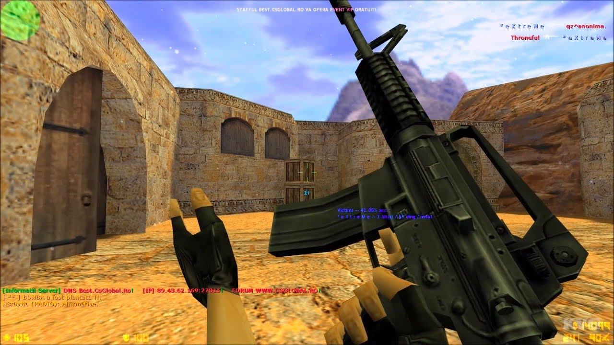
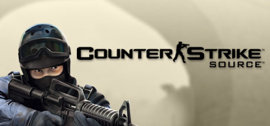
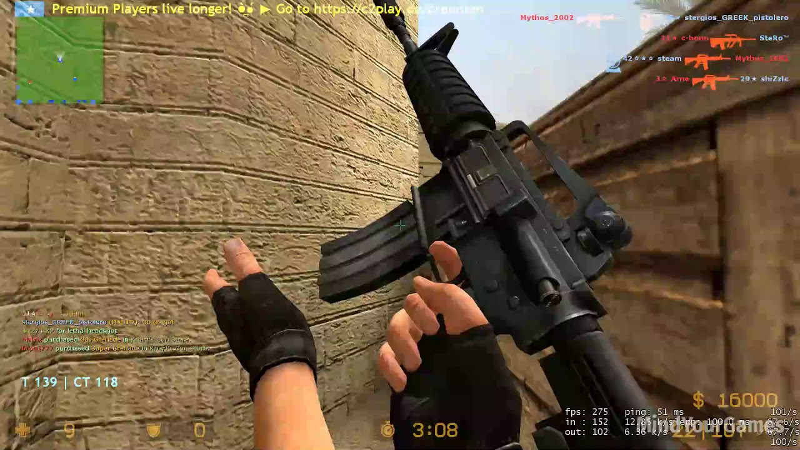
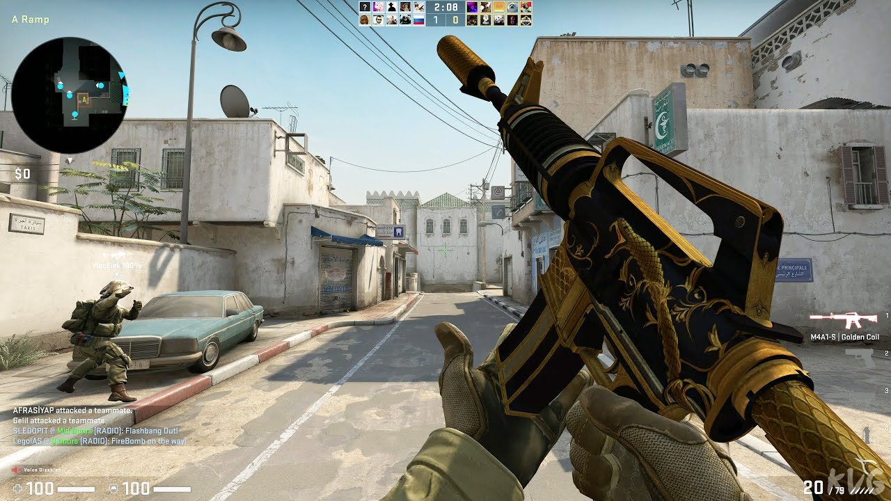
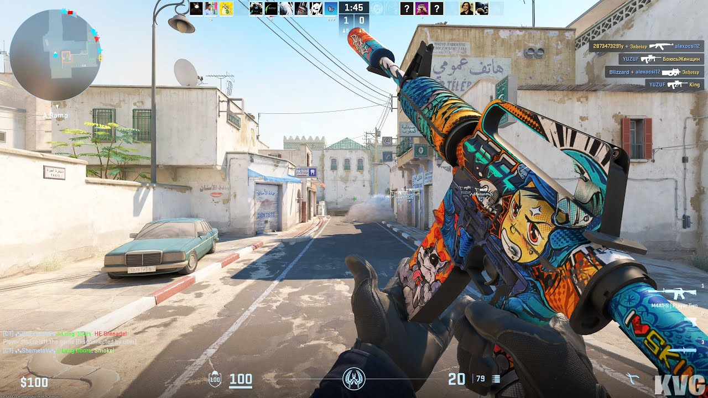

Counter-Strike 1.6

Counter-Strike 1.6 es, para muchos, la versión más emblemática de toda la saga. Fue lanzado oficialmente en el año 2000 y se convirtió en el estándar de los juegos de disparos en línea durante los primeros años de los 2000. Con una jugabilidad precisa, un enfoque táctico y mapas legendarios como de_dust2, inferno y nuke, CS 1.6 definió el género de los shooters competitivos.
En esta versión se consolidaron las mecánicas clásicas de compra de armas, economía por rondas y la importancia del trabajo en equipo. A pesar de sus gráficos simples para los estándares actuales, su comunidad permaneció activa por más de una década y aún hoy existen torneos y servidores dedicados. Muchos jugadores profesionales comenzaron su carrera con esta versión.
Counter-Strike: Source
CS: Source fue lanzado en 2004 utilizando el motor gráfico Source de Valve, lo que representó una mejora considerable en los aspectos visuales y de físicas con respecto a su predecesor. Los personajes, armas y mapas fueron rediseñados, y las animaciones se volvieron más fluidas y realistas.
Aunque no logró reemplazar por completo a 1.6 en la escena competitiva, sí atrajo a una nueva generación de jugadores y sirvió como puente tecnológico entre el pasado y el futuro de la franquicia. Fue muy popular en servidores públicos y en comunidades que disfrutaban de modos de juego alternativos como surf, zombie escape y deathrun.
Counter-Strike: Global Offensive (CS:GO)

CS:GO llegó en 2012 con el objetivo de modernizar la experiencia de Counter-Strike. A diferencia de sus predecesores, esta entrega tuvo un enfoque fuerte en el juego competitivo profesional, con un sistema de emparejamiento (matchmaking), rangos, y soporte directo de Valve para torneos.
Uno de los cambios más significativos fue la introducción del sistema de skins para armas, lo cual generó un mercado virtual masivo con millones de dólares en transacciones. Además, CS:GO introdujo modos nuevos como "Arms Race" y "Demolition", pero siempre mantuvo el núcleo del juego clásico intacto.
Fue el responsable de consolidar a Counter-Strike como un pilar en los esports, con torneos como ESL One, DreamHack y los famosos Majors, que atraen a millones de espectadores alrededor del mundo.
Counter-Strike 2 (CS2)

Lanzado en 2023, Counter-Strike 2 representa una evolución técnica de CS:GO más que un cambio completo de fórmula. Esta versión fue desarrollada sobre el motor Source 2 de Valve, permitiendo gráficos más detallados, iluminación mejorada, físicas avanzadas y una experiencia más inmersiva en general.
CS2 también introdujo mejoras en la precisión del registro de impactos, el comportamiento de las granadas (como las de humo, que ahora reaccionan al entorno y a los disparos), y animaciones más realistas en personajes y armas. A nivel competitivo, mantiene la esencia de CS:GO, con los mismos mapas, armas y reglas base.
La transición fue gratuita para los jugadores de CS:GO, y aunque al principio tuvo opiniones mixtas por ciertos bugs, con el paso de los meses ha mejorado notablemente y se ha convertido en la nueva base del competitivo actual.
